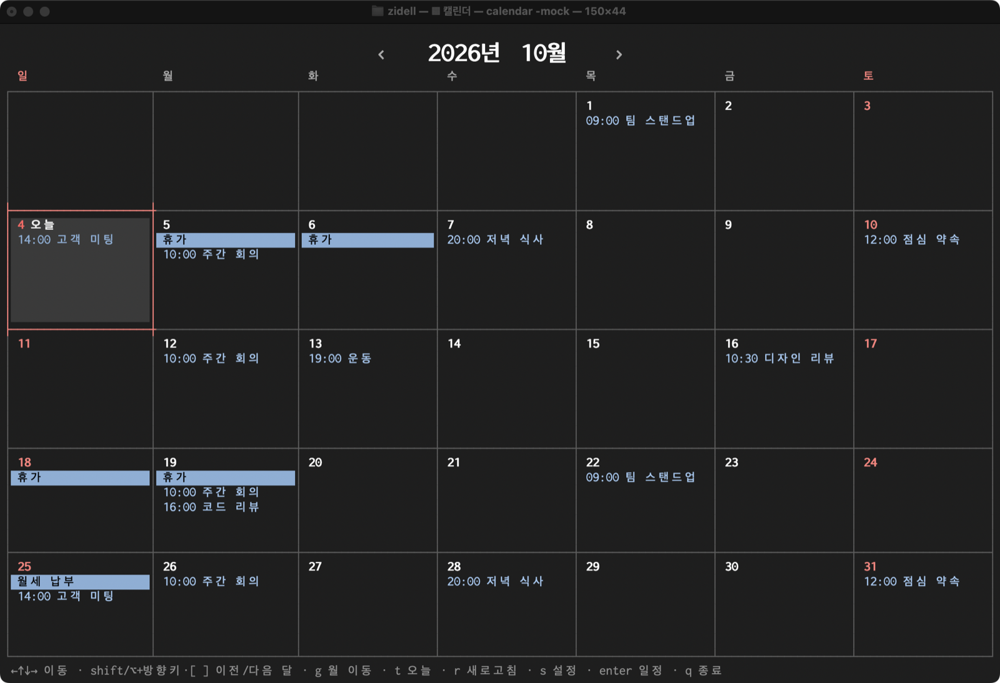

터미널용 캘린더A calendar for the terminal
맥북 기준, 시스템에 설정된 iCloud/Google 캘린더 정보 기반으로 TUI상에서 간단하게 사용할 목적으로 개발됨 For Mac. Built for simple use in a TUI, based on the iCloud/Google calendars set up in your system.
curl -fsSL https://zidell.github.io/calendar-tui/install.sh | bash
macOS 14 이상 · Apple Silicon·Intel · 설치 후 Dock의 Calendar TUI를 누르세요. 같은 명령으로 업데이트합니다. macOS 14+ · Apple Silicon & Intel · Then click Calendar TUI in the Dock. Run the same command to update.

| ← ↑ ↓ → | 하루 · 한 주 이동Move by day / week |
| [ ] | 이전 · 다음 달(주)Previous / next month (week) |
| Enter | 그날 일정 목록That day's events |
| a · / · v | 빠른 추가 · 검색 · 보기 바꾸기Quick add · search · switch view |
| g · t · s | 월 이동 · 오늘 · 설정Go to month · today · settings |
| esc · q | 창 닫기(취소) · 종료Close window (cancel) · quit |
/Applications/Calendar TUI.app과 ~/Library/Application Support/calendar-tui를 휴지통으로.To uninstall, trash /Applications/Calendar TUI.app and ~/Library/Application Support/calendar-tui.소스에서 빌드하려면(Go, Xcode 커맨드라인 도구 필요):To build from source (needs Go and the Xcode Command Line Tools):
git clone https://github.com/zidell/calendar-tui.git cd calendar-tui && scripts/package.sh --install